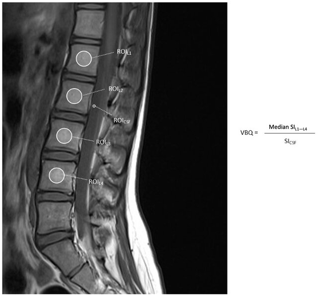

Adapted from: Non-contrast-enhanced T1-weighted MRI of the lumbar spine demonstrating regions of interest used to calculate the L1–L4 vertebral body quality (VBQ) score, Journal of Clinical Medicine (Accessed on 03 Jan 2026).
1) Description of Measurement
The Vertebral Bone Quality (VBQ) score is an MRI-based measure that quantifies vertebral bone marrow signal intensity to assess bone quality. It serves as an opportunistic screening tool for osteoporosis and bone quality assessment in patients undergoing spine imaging. The VBQ score reflects bone marrow composition, with higher scores indicating increased fat content in the marrow (which correlates with decreased bone quality). The score is calculated as a ratio of vertebral body signal intensity to cerebrospinal fluid (CSF) signal intensity on non-contrast T1-weighted MRI sequences.
2) Instructions to Measure
3) Normal vs. Pathologic Ranges
4) Important References
Salzmann SN, Okano I, Jones C, Zhu J, Lu S, Onyekwere I, Balaji V, Reisener MJ, Chiapparelli E, Shue J, Carrino JA, Girardi FP, Cammisa FP, Sama AA, Hughes AP. Preoperative MRI-based vertebral bone quality (VBQ) score assessment in patients undergoing lumbar spinal fusion. Spine J. 2022 Aug;22(8):1301-1308. doi: 10.1016/j.spinee.2022.03.006. Epub 2022 Mar 24. PMID: 35342015.
Zhou Z, Wang JQ, Daniel Mwesigwa K, Chen Y, Jin PL, Dong XY, Zhang HQ, Zhou LP, Jia CY, Kang L, Ma HY, Shen CL, Zhang RJ. Vertebral bone quality score as a novel tool for bone mineral density assessment: which measurement approach is more accurate? Eur Spine J. 2025 Nov 10. doi: 10.1007/s00586-025-09544-y. Epub ahead of print. PMID: 41207959.
Zhou Z, Wang JQ, Daniel Mwesigwa K, Chen Y, Jin PL, Dong XY, Zhang HQ, Zhou LP, Jia CY, Kang L, Ma HY, Shen CL, Zhang RJ. Vertebral bone quality score as a novel tool for bone mineral density assessment: which measurement approach is more accurate? Eur Spine J. 2025 Nov 10. doi: 10.1007/s00586-025-09544-y. Epub ahead of print. PMID: 41207959.
Kim AYE, Lyons K, Sarmiento M, Lafage V, Iyer S. MRI-Based Score for Assessment of Bone Mineral Density in Operative Spine Patients. Spine (Phila Pa 1976). 2023 Jan 15;48(2):107-112. doi: 10.1097/BRS.0000000000004509. Epub 2022 Oct 17. PMID: 36255388.
5) Other info....
Unlike DXA, which provides areal bone density, the VBQ score assesses microstructural bone quality and correlates more strongly with osteoporosis, fracture risk, and surgical complications. While it shows a moderate-to-strong correlation with DXA T-scores, particularly in older adults, it should be used for risk stratification rather than as a standalone diagnostic.